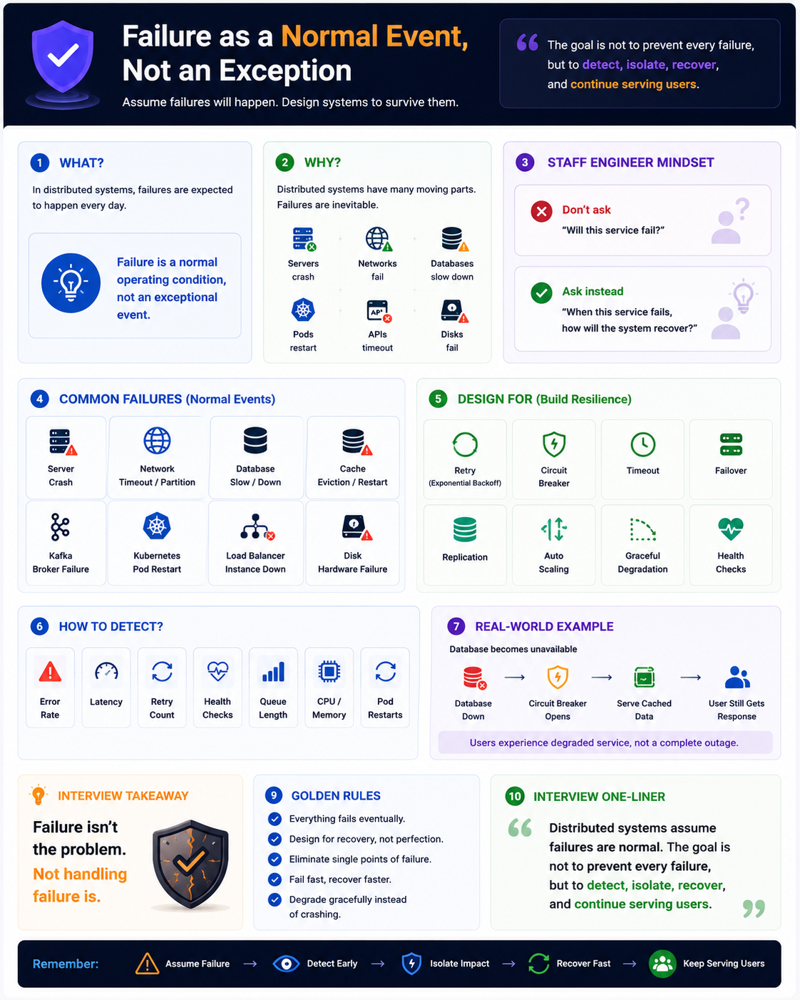

Interview notes — Senior / Staff Engineer level
What?
Assume failures will happen. Design systems to survive them, not avoid them.
In distributed systems, failures are expected to happen every day. Failure is a normal operating condition, not an exceptional event.
Why? — Failures are Inevitable
Distributed systems are made of hundreds of components. Every one of them can fail.
Servers crash
Networks partition
DBs slow down
Pods restart
APIs timeout
Disks fail
Staff Engineer Mindset
Don't ask
"Will this service fail?"
Ask instead
"When this service fails, how will the system recover?"
Common Failures
| Failure Type | Example |
|---|---|
| Server | Crash / OOM kill |
| Network | Timeout / Partition |
| Database | Slow / Unavailable |
| Cache | Eviction / Restart |
| Kafka | Broker failure |
| Kubernetes | Pod restart / eviction |
| Load Balancer | Instance down |
| Disk | Hardware failure |
Design For — Build Resilience
Retry (Backoff)
Circuit Breaker
Timeout
Failover
Replication
Auto Scaling
Graceful Degradation
Health Checks
How to Detect
Real-World Example — DB Down Cascade
Users experience degraded service, not a complete outage. That's the goal.
Interview Takeaway
Failure isn't the problem.
Not handling failure is.
"The goal is not to prevent every failure, but to detect, isolate, recover, and continue serving users."
Golden Rules
Remember
Interview One-Liner
Distributed systems assume failures are normal. The goal is not to prevent every failure, but to detect, isolate, recover, and continue serving users.
